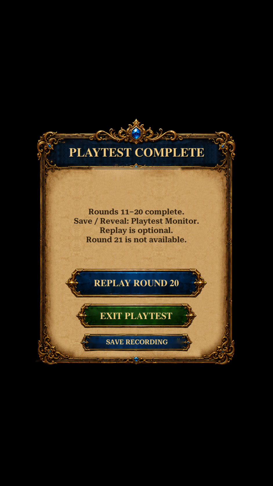
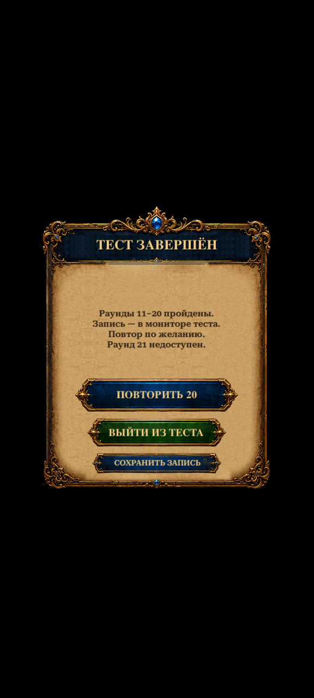

Campaign Foundation · R12 · Implemented test candidate
A clear finish, with focused balance changes.
The recorded playtest ends after the final story with Save, Exit and optional Replay. R12 adjusts only four normal-round move allowances. R9 and production content remain unchanged.
Start the new playtest
In Unity Play Mode, reach Home and choose:
Legends of Rus → Development → Campaign Playtest 11-20 R12 Tuning (Recorded)
Play without inventory boosters. Rate 12, 13, 14, 17 and 19 before Continue/Retry. Finish the well story after20, save, then use the monitor's Show recording or Copy recording path.
Complete follow-up instructions
Four conservative adjustments
| Round | R9 moves | R12 moves |
|---|
| 13 | 28 | 25 |
| 14 | 29 | 26 |
| 17 | 29 | 26 |
| 19 | 29 | 25 |
Seeds, layouts, goals and rewards are unchanged. Recovery11/16, teaching12/18 and peaks15/20 retain their allowances. These are experimental values requiring another human pass.
Actual Unity completion panel

English ·941×1672. Actual Unity render after an animated round20 win and story acknowledgement. Earlier progress was a declared test fixture; black surrounding area is the capture harness.Russian portrait capture

Russian ·576×1280. Same implemented view and existing approved panel materials.Replay selection spends nothing. Starting the replay spends normal energy and records a new attempt. Save failures remain visible and retryable before Exit.
Verification
30 distinct targeted Unity checks passed: completion/tuning4, recording16 and campaign10. Thirty existing solution traces replay successfully within the new budgets; those are solvability evidence, not player difficulty ratings.
The R12 analyzer excludes your R9 recording. No human R12 or Android results are claimed. Animations/effects remain deferred to the final phase.
Implementation report · Check results · Content differences · Changed files · Your R9 playtest findings